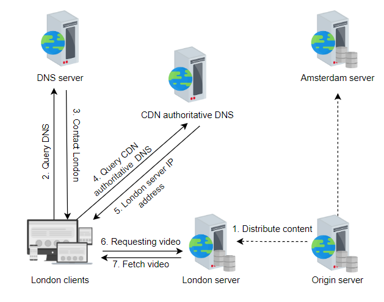

What is Content Delivery Network (CDN)?
- A Content Delivery Network (CDN) is a group of geographically distributed proxy servers. A proxy server is an intermediate server between a client and the origin server.
- CDN mainly stores two types of data: static and dynamic.
- The primary purpose of a CDN is to deliver content, such as web pages, images, videos, and other digital assets, to users more efficiently and quickly.
- A CDN caches a significant portion of content based on its capabilities, primarily focusing on caching static content. For example, Netflix might be able to store over 90% of its movies in a CDN, but this isn't practical for a service like YouTube because of the vast amount of content it hosts.
Key Features of a CDN
- Geographic Distribution: Servers are placed in multiple locations worldwide, ensuring that content is delivered from the closest server to the user.
- Caching: CDNs store cached versions of content, reducing the load on the origin server and speeding up the delivery process.
- Load Balancing: By distributing traffic across multiple servers, CDNs prevent any single server from becoming overwhelmed.
Pull Strategy (On-Demand Content Retrieval)
- Content is not pre-loaded to the edge servers. Instead, when a client requests content, the CDN checks if it’s available on the nearest edge server.
- If the content is not available, the edge server pulls it from the origin server (or another proxy server in the hierarchy).
- Once the content is retrieved, it is cached on the edge server for future requests, so subsequent requests for the same content can be served directly from the edge.
Push Strategy (Pre-Loading Content)
- Content is proactively pushed from the origin server to the edge servers, regardless of whether users have requested it.
- This is typically done for static, popular, or time-sensitive content that needs to be widely available as soon as it's published.
Example
When a user in Europe accesses a website hosted in the US, a CDN will deliver content from a nearby European server, significantly reducing load times compared to fetching the content directly from the US server.
CDNs are commonly used by large websites, streaming services, and applications to ensure quick, reliable access to their content for users around the world.
Problems a CDN Can Solve
- Reduced Latency: By caching content closer to users, a CDN minimizes the distance data travels, leading to faster load times.
- Load Distribution: A CDN spreads traffic across multiple servers, reducing the load on the origin server and preventing overloads.
- Improved Availability: With content distributed across multiple servers, a CDN can keep a website online even if the origin server goes down.
- Scalability: A CDN can handle traffic spikes by distributing requests across a vast network of servers, ensuring consistent performance during high demand.
- Enhanced Security: CDNs can mitigate DDoS attacks by absorbing malicious traffic across their network, protecting the origin server.
- Bandwidth Optimization: By caching content, a CDN reduces the amount of data that needs to be transferred from the origin server, saving bandwidth costs.
Building blocks for cdn
- Edge Servers (Points of Presence - PoPs)
- Definition: Edge servers are the physical or virtual servers located at strategic points around the world.
- Function: These servers cache copies of content closer to users, reducing latency and improving load times.
- Origin Server
- Caching Mechanism
- Load Balancers
- Routing and DNS
cdn workflow
How CDN Works in Cloud Services
You start by uploading your website’s static content (images, videos, CSS files, etc.) to cloud storage, such as Amazon S3, Google Cloud Storage, or Azure Blob Storage. This storage acts as the origin server for your CDN.
Next, you configure your CDN service (e.g., Amazon CloudFront, Azure CDN, or Google Cloud CDN) to pull content from the cloud storage. You specify the origin server (cloud storage URL) and the CDN service handles the rest.
A user from New York requests an image from your website. The request is first routed to the CDN rather than directly to the origin server.
The CDN determines the edge server closest to the user’s location (e.g., an edge server located in New York).
The edge server checks its cache to see if the requested image is already stored locally. If the image is cached, the edge server immediately serves it to the user.
If the image is not in the cache, the edge server retrieves the image from the origin server (cloud storage) and then caches it for future requests.
Once the content is retrieved (either from the cache or the origin server), it is delivered to the user with minimal latency, thanks to the proximity of the edge server.
For subsequent requests from other users in the same region, the CDN serves the cached content from the edge server, ensuring fast delivery and reducing the load on the origin server.
Example
Imagine you're hosting a video streaming website, and you've uploaded your video files to Amazon S3. You've also configured Amazon CloudFront as your CDN.
A user in Tokyo tries to watch a video. The request is routed to the nearest edge server in Tokyo. If this edge server already has the video in its cache, it quickly serves the video to the user. If not, it retrieves the video from Amazon S3, caches it, and streams it to the user. Future users in Tokyo will now get the video faster because it’s cached locally.
Cache Busting
What is Cache Busting?
Cache busting is a technique used to ensure that clients and CDNs retrieve the most recent version of a file, rather than serving an outdated or cached version. When a file changes, cache busting techniques force the cache to invalidate the old version and fetch the new one from the server.
Why is Cache Busting Important?
Without cache busting, users might continue to receive outdated files from the cache even after updates have been made. This can lead to issues such as users seeing old content, broken functionality, or inconsistencies in the user experience. Cache busting helps ensure that users always get the latest version of resources like CSS files, JavaScript, and images.
Common Cache Busting Techniques
- Query Strings: Appending a query string to the URL of a resource, such as
styles.css?v=2.0. Each time the file changes, the query string is updated to reflect the new version. - Versioning in Filename: Including a version number directly in the filename, such as
styles.v2.0.css. When the file is updated, the filename is changed, ensuring that browsers and CDNs treat it as a new resource. - Hashing: Generating a unique hash based on the file contents and appending it to the filename, like
styles.abcdef123456.css. The hash changes whenever the file contents change, ensuring that clients receive the updated version.
How Cache Busting Works in a CDN Environment
In a CDN environment, cache busting techniques work by altering the URL of resources whenever a change is made. When a new version of a file is deployed:
- The CDN recognizes the updated URL (with a new query string, version number, or hash).
- The CDN fetches the updated file from the origin server and caches it at the edge locations.
- Subsequent requests for the file are served from the edge locations with the updated content.
This approach ensures that users receive the latest content while minimizing the risk of serving stale resources.
Considerations for Implementing Cache Busting
When implementing cache busting, consider the following:
- Consistency: Ensure that all resources (CSS, JS, images) are properly versioned to avoid inconsistencies.
- Build Process Integration: Integrate cache busting into your build process or deployment pipeline to automate versioning and minimize manual effort.
- Impact on Caching Policies: Be mindful of how cache busting affects caching policies and TTL (time-to-live) settings for different types of content.
Interview Questions and Answers
Q1: What is a CDN, and how does it work?
- A Content Delivery Network (CDN) is a distributed network of servers that delivers web content to users based on their geographic location.
- CDNs store cached versions of your website content in multiple locations around the world, also known as edge locations.
- When a user requests content, the CDN serves it from the nearest edge location, reducing latency and improving load times.
- This setup is especially useful for handling high traffic loads and ensuring availability and performance globally.
Q2: Why would you use a CDN in a web application?
- CDNs are used to enhance the performance, reliability, and scalability of web applications.
- They reduce latency by serving content from edge servers closer to the user, balance load by distributing traffic across multiple servers, and improve availability by providing redundancy.
- Additionally, CDNs can help protect against DDoS attacks by distributing and absorbing the traffic load.
Q3: Explain the process of cache invalidation in a CDN.
Cache invalidation in a CDN involves removing or updating content in the CDN’s cache when it becomes stale or outdated.
This can be done through:
- Time-to-Live (TTL): Setting a TTL for cached content so that it automatically expires after a certain period.
- Manual Purging: Explicitly sending a request to purge or invalidate specific content across all edge locations.
- Cache Key Versioning: Changing the URL or query string parameters, forcing the CDN to treat it as a new resource and fetch a fresh copy from the origin server.
Q4: How do you handle dynamic content with a CDN?
- Partial Caching: Caching parts of the page that are static and dynamically generating the rest.
- Edge Computing/Edge Functions: Using CDN capabilities like serverless functions at the edge to generate dynamic content closer to the user.
- API Caching: Caching API responses that are less dynamic or have a defined TTL.
Q5: What is the difference between a CDN and a reverse proxy?
- A CDN is specifically designed to cache and serve static content from multiple geographically distributed locations to reduce latency and improve availability.
- A reverse proxy, on the other hand, is a server that sits between the client and the origin server, forwarding client requests to the origin and returning the server's response to the client.
- While CDNs often act as reverse proxies, a reverse proxy itself does not necessarily provide the geographic distribution and caching that a CDN offers.
Q6: How would you ensure the security of data in transit between your origin servers and the CDN?
- TLS/SSL Encryption: Enforcing HTTPS between the origin servers and the CDN to secure data in transit.
- IP Whitelisting: Restricting access to the origin server only to known CDN IP ranges.
- Token-Based Authentication: Using signed URLs or tokens to ensure that only authorized requests are allowed to fetch content from the CDN.
Q7: How can CDNs help in mitigating DDoS attacks?
CDNs help mitigate DDoS attacks by distributing the traffic across a large number of edge servers.
This distribution makes it difficult for attackers to overwhelm a single point of origin.
Additionally, many CDNs offer built-in DDoS protection features such as traffic filtering, rate limiting, and web application firewalls (WAFs),
which inspect incoming traffic for malicious requests and block them before they reach the origin server.
- A Content Delivery Network (CDN) is a distributed network of servers that delivers web content to users based on their geographic location.
- CDNs store cached versions of your website content in multiple locations around the world, also known as edge locations.
- When a user requests content, the CDN serves it from the nearest edge location, reducing latency and improving load times.
- This setup is especially useful for handling high traffic loads and ensuring availability and performance globally.
- CDNs are used to enhance the performance, reliability, and scalability of web applications.
- They reduce latency by serving content from edge servers closer to the user, balance load by distributing traffic across multiple servers, and improve availability by providing redundancy.
- Additionally, CDNs can help protect against DDoS attacks by distributing and absorbing the traffic load.
Cache invalidation in a CDN involves removing or updating content in the CDN’s cache when it becomes stale or outdated.
This can be done through:
- Time-to-Live (TTL): Setting a TTL for cached content so that it automatically expires after a certain period.
- Manual Purging: Explicitly sending a request to purge or invalidate specific content across all edge locations.
- Cache Key Versioning: Changing the URL or query string parameters, forcing the CDN to treat it as a new resource and fetch a fresh copy from the origin server.
- Partial Caching: Caching parts of the page that are static and dynamically generating the rest.
- Edge Computing/Edge Functions: Using CDN capabilities like serverless functions at the edge to generate dynamic content closer to the user.
- API Caching: Caching API responses that are less dynamic or have a defined TTL.
- A CDN is specifically designed to cache and serve static content from multiple geographically distributed locations to reduce latency and improve availability.
- A reverse proxy, on the other hand, is a server that sits between the client and the origin server, forwarding client requests to the origin and returning the server's response to the client.
- While CDNs often act as reverse proxies, a reverse proxy itself does not necessarily provide the geographic distribution and caching that a CDN offers.
- TLS/SSL Encryption: Enforcing HTTPS between the origin servers and the CDN to secure data in transit.
- IP Whitelisting: Restricting access to the origin server only to known CDN IP ranges.
- Token-Based Authentication: Using signed URLs or tokens to ensure that only authorized requests are allowed to fetch content from the CDN.
CDNs help mitigate DDoS attacks by distributing the traffic across a large number of edge servers. This distribution makes it difficult for attackers to overwhelm a single point of origin. Additionally, many CDNs offer built-in DDoS protection features such as traffic filtering, rate limiting, and web application firewalls (WAFs), which inspect incoming traffic for malicious requests and block them before they reach the origin server.